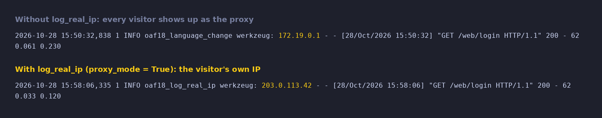

Behind nginx or another reverse proxy, Odoo's access log shows the proxy's address on every line. This module logs the visitor's real IP instead.
Odoo 18.0 Community & Enterprise Free · LGPL-3

The same request through a proxy, logged without and with the module.
Reads the standard X-Forwarded-For header your proxy sets.
Uses X-Real-IP when X-Forwarded-For is missing.
Active only when Odoo runs with proxy_mode = True, so the header cannot be spoofed on direct setups.
A small patch at startup: no tables, no settings, no extra queries.
Free and open source (LGPL-3) by Paulius Gaizauskas · Questions or bugs: GitHub issues